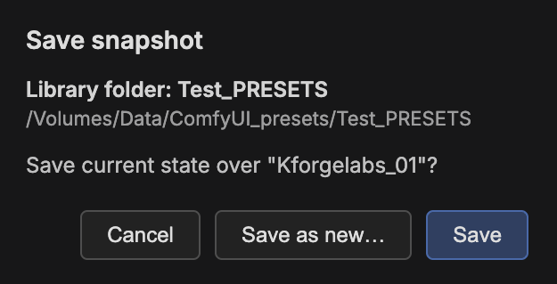

Snapshot row
Load, Quick Save, Save, Settings.
Kforge Labs
Save the nodes, modules, workflows, tags, and snapshot state you need for a project, then load that setup again when the work comes back.
Start here
Snapshot, Tools, Search, Nodes, Workflows, and saved lists work together to keep each project kit easy to save, find, and reload.

Load, Quick Save, Save, Settings.
Maintenance plus the Help guide.
Find nodes, workflows, folders, and tags.
Switch tree or list view, then add a favorite node.
Save the canvas or selected nodes, then browse saved workflows.
Nodes, Workflows, and Tags stay visible below.
Most important idea
A Snapshot saves Kforge Labs state: favorite nodes, saved workflows, modules, tags, archive, and the current sidebar organization. Use one named snapshot per project, shot, client, or experiment.

Project rhythm

Save and reload the whole project kit.
Keep favorite nodes organized and easy to update.
Find saved work from one field. Tags keep exact capitalization.
Save full scripts or reusable node selections.
Quiet helpers protect projects and make saved kits portable.
Visual recipes

Save updates the current project kit.
Save as new creates another named snapshot.

Open checks the current library folder.
Recovery auto-saves are available below saved snapshots.
Workflow save-selection is the bottom-right workflow action. Use it after selecting nodes on the canvas.